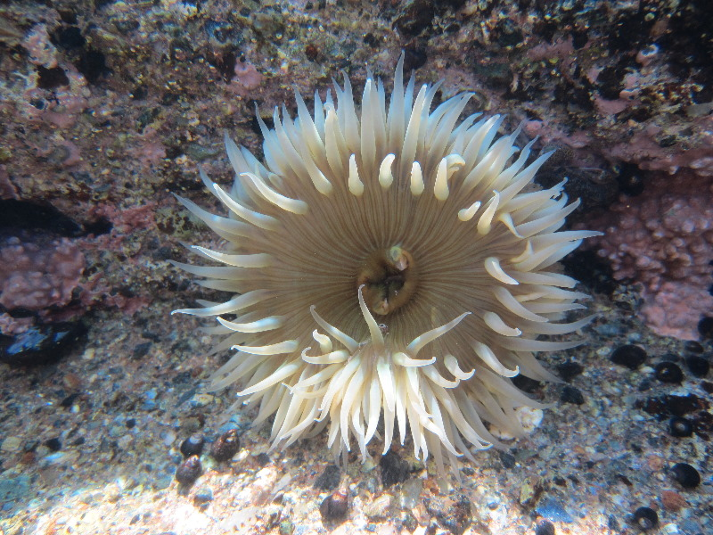

In this game, you play as a colony of tadpoles in a tidepool. There also happen to be other creatures swimming about, and by using your mouse cursor you can try to avoid them.
You can also sit back and watch the simulation take place too. The basic flocking inteligence does a pretty cool job on it's own!
While in reality flocks do no have a leader, I thought adding some interaction with the simulation would make it more engaging.
In reality All flocks, with any form of complex "inteligence," rely on the compund use of simple rules. Every agent in a Complex Adaptive System folows a set of rules that create the intrcate patterns we see in the wild. In the same way, A foundation of simple rules brings the AI of this game come to life.
Josefin-Sans
Shadows Into Light